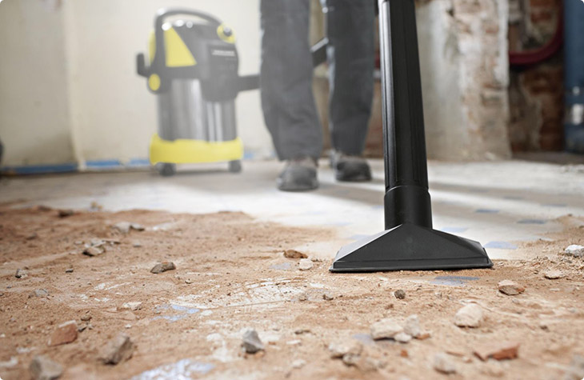

Уборка после ремонта
Наши услуги
Одним из основных направлений деятельности компании CleanRoom является
предоставление профессиональных услуг по уборке после ремонта в
Минске. Услуга уборки после ремонта особенно востребована, так как
после завершения строительных или ремонтных работ часто остаются
строительные следы, пыль, краска и другие загрязнения, которые могут
испортить общий вид помещения и усложнить его использование.
Мы предлагаем высококачественную уборку после ремонта в офисных и
жилых помещениях. Наша команда профессиональных сотрудников обладает
опытом в уборке после строительства и ремонта, а также использует
современное оборудование и специализированные моющие средства для
эффективного удаления строительных отходов и загрязнений.
Мы гарантируем, что после нашей работы помещение будет полностью
очищено от строительной пыли, следов краски, отходов стройматериалов и
других загрязнений. Мы также обеспечиваем безопасность и сохранность
поверхностей, чтобы предотвратить повреждения или царапины во время
уборки. Наша команда всегда готова приехать в удобное для вас время и
привести помещение в порядок после завершения ремонтных работ. Мы
понимаем важность чистоты и комфорта в новых или отремонтированных
помещениях, поэтому предлагаем профессиональный и надежный сервис
уборки после ремонта.
Какие виды услуг мы оказываем
- Удаление строительного мусора: Это включает очистку и удаление остатков строительных материалов, таких как кирпичи, бетон, гипсовая пыль, обрезки древесины и другие строительные отходы.
- Уборка пыли и грязи: После ремонта обычно остается много пыли и грязи на поверхностях. Ваши сотрудники могут осуществлять влажную уборку полов, стирку окон, протирку поверхностей и мебели, чтобы удалить пыль и грязь.
- Удаление следов краски и клея: Ремонтные работы могут оставлять следы краски, клея или скотча на различных поверхностях. Ваши сотрудники могут использовать специальные средства и инструменты для удаления этих следов без повреждения поверхностей.
- Удаление запахов: Ремонтные работы могут оставлять специфические запахи, такие как запах краски или растворителей. Ваша компания может предоставлять услуги по удалению запахов, включая проветривание помещений, использование освежителей воздуха или специализированных средств для устранения неприятных запахов. 
Наши специалисты готовы оперативно и профессионально выполнить уборку после ремонта в вашем офисе или торговом объекте. Не стесняйтесь связаться с нами прямо сейчас - мы всегда готовы приехать и обеспечить чистоту ваших помещений!
 +375297762648
+375297762648Наши Клиенты


Уборка после ремонта
Наши клинеры обладают опытом работы с различными сложными поверхностями после ремонта, включая полы, стены и потолки.
После завершения ремонтных работ, поверхности могут быть покрыты строительной пылью, краской, клеем, гипсом или другими следами строительных материалов. Наша команда легко справится с очищением этих поверхностей, используя соответствующие методы и средства.
Мы проведем влажную уборку полов, включая удаление пыли, строительного мусора и пятен. Также мы протрем стены, удалим следы краски или клея, а при необходимости выполним покраску или ремонт поверхностей.
Наша команда также обеспечит чистку потолков от строительной пыли и пятен. Мы использовать специальные средства и технику, чтобы вернуть потолкам их чистоту и блеск.
Важно отметить, что мы выполняем уборку после ремонта с использованием безопасных и экологически чистых средств, чтобы обеспечить здоровую и безопасную среду для наших клиентов.
Стоимость услуг по уборке после ремонта
Компания CleanRoom предлагает конкурентные цены на услуги уборки после ремонта. Мы также делаем скидки при заказе большого объема работ. По прибытии на объект наш менеджер проведет оценку и зафиксирует пожелания заказчика, после чего произведет расчет стоимости услуг.
| Размер помещения | Цена |
|---|---|
| До 100м2 | от 119 BYN |
| 100-200м2 | от 139 BYN |
| 200-400м2 | от 279 BYN |
| Более 400м2 | от 559 BYN |
Процесс профессиональной уборке после ремонта
- Очистка поверхностей от грубых загрязнений, включая удаление пыли, строительных остатков и обрезков с рам, подоконников и других поверхностей.
- Применение специализированных чистящих средств для эффективного удаления стойких загрязнений на стеклах, таких как пятна краски, клей, или следы строительной пыли.
- Тщательная чистка стекол, проводимая профессиональными клинерами, чтобы достичь безупречной прозрачности и избежать разводов.
- Ополаскивание всех поверхностей с применением специальных средств, которые предотвращают скопление грязи и бактерий, обеспечивая свежесть и чистоту после уборки.
- Полировка стекол с использованием высококачественных моющих средств и профессиональной клининговой техники, чтобы придать им сияющий вид и безупречный блеск.
- Проверка качества выполненных работ, чтобы убедиться, что все поверхности и стекла очищены до высокого стандарта и соответствуют ожиданиям клиента.
Почему выбирают CleanRoom?
- Мы оперативно предоставляем услуги в любое удобное время.
- Работы выполняет слаженная команда опытных сотрудников, что гарантирует идеальный результат и сохранность целостности стекол и фасадов.
- Наши клинеры используют современный инвентарь и эффективные чистящие средства, соответствующие экологическим нормативам и являющиеся безопасными для здоровья людей.
- Мы ответственно подходим к срокам сдачи заказов и никогда не нарушаем рабочий процесс в компании клиента.
- Стоимость проведения уборки после ремонта в CleanRoom не бьет по бюджету заказчика.
Как мы работаем
Вы оформляете свою уборку на сайте
Наши клинеры приезжают и начинают работу
Вы оплачиваете уборку